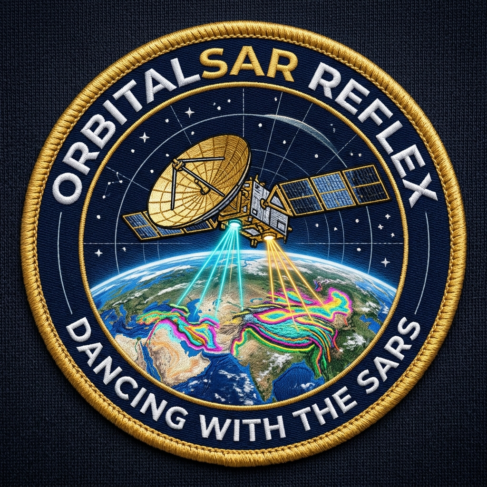

Translating NASA NISAR L-band & Multi-SAR Earth rhythms into real-time surface-change visualizations fused with Meteomatics weather intelligence and 24-byte edge telemetry.
Volkan Dagli (Team Owner · @pCwOrM) · Murat Emre ÖZKAYA · Prenses Metin (@PrensesMTN)

Earth's surface shifts continuously through floods, quakes, wildfires, and glacial surges. Radar penetrates darkness and storms, yet two gaps delay public action:
Raw SAR covariance matrices (GCOV) and unwrapped interferograms (GUNW) are hard for communities and emergency planners to interpret alongside weather drivers.
Standard SAR scenes demand multi-gigabyte links. Critical flood or seismic trigger alerts wait hours unless distilled deterministically on the edge.
Radar drops occur in both quiet lakes and flash floods. Cross-checking SAR coherence loss with high-resolution precipitation removes false alarms.
Combining NASA NISAR L-band (~24 cm) canopy penetration with Sentinel-1 C-band (~5.6 cm) surface sensitivity and live meteorological telemetry.
C2854338529-ASF (GCOV) & C2854335566-ASF (GUNW InSAR)sentinel-1-rtcprecip_24h:mm, t_2m:C, wind & RH synced to pass epochsEvery anomaly is distilled into a fixed little-endian binary frame (<IffffBBH>) protected by CRC-16, achieving >7.5×10⁷× alert bandwidth compression.
uint32 epoch seconds + float32 latitude & longitude pinpoint exact disaster footprint.
float32 Δσ⁰ (dB), float32 Δγ coherence drop, uint8 anomaly code (0–5) & severity (0–255).
Deterministic zlib.crc32(body) & 0xFFFF checksum blocks bit corruption across narrowband downlinks.
Our hometown basin connects Taurus mountain runoff to ecologically vital Göksu wetlands and coastal farms.
NISAR_L2_PR_GCOV_033_100_A_020... (2026-10-19)2026-10-07 → 2026-10-19sentinel-1-rtc swathΔσ⁰ = −6.02 dB · Coherence Drop Δγ = 0.64 · Severity = 145/255 · Weather×SAR Confidence = 74.5%.
Interactive layer wipe compares NISAR HHHH / HVHV polarizations against GUNW and Sentinel-1 VV/VH.
SURFACE_DEFORMATION (Sev 76)
NISAR GUNW (2026-10-09→21) + NASA Quad-Pol L-band UAVSAR track fault creep & Delta levees.
WILDFIRE_SCAR (Sev 93)
NISAR L-band DHDH penetrates closed canopy (ΔRVI = −0.65) where optical clouds blind passive sensors.
GLACIER_SURGE (Sev 98)
Sub-zero Meteomatics gating (−3.8 °C) isolates Δγ = 0.78 basal ice shear in NISAR InSAR pairs.
The live web observatory queries cmr.earthdata.nasa.gov & Planetary Computer STAC in real time via CORS for instant citizen-science verification.
https://pcworm.github.io/orbitalsar-reflex/github.com/pCwOrM/orbitalsar-reflex10/10 PASS verifying CRC-16 framing, classification thresholds & JSON dataset integrity..bin telemetry packets straight from browser sliders.sentinel-1-rtc)